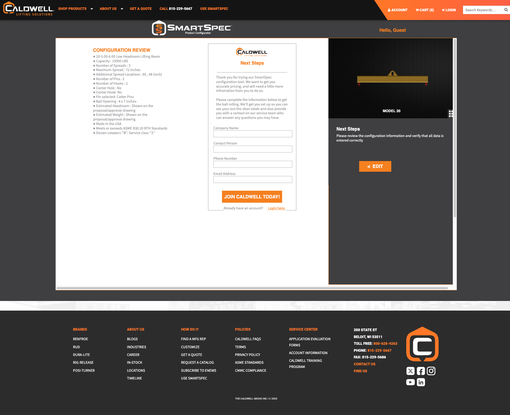
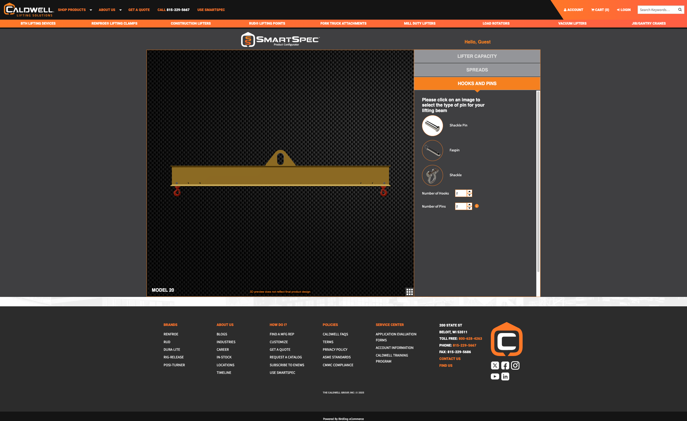
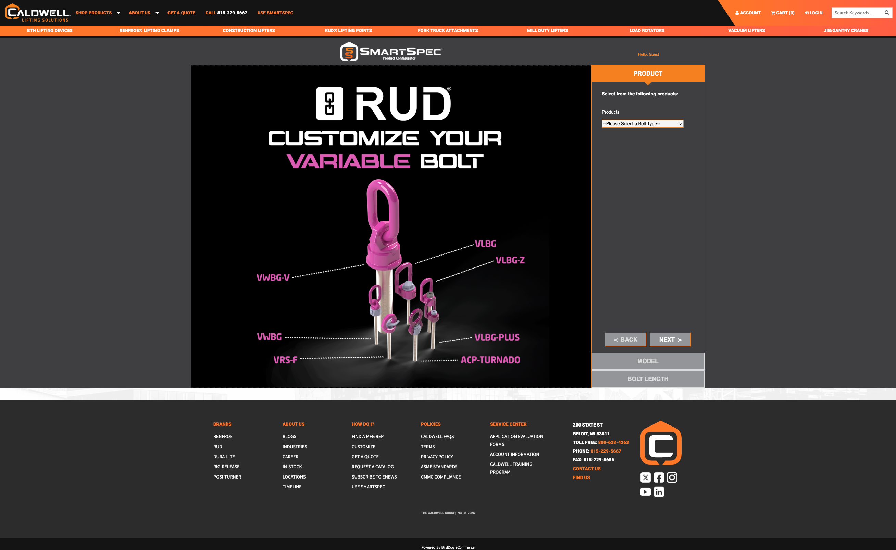

Redesigned Caldwell's custom lifting device configurator for crane/rigging and construction users. Turned a complex, manual quoting process into a guided experience that responds in minutes, not days.
The Problem
Goals
Key Design Decisions
Reorganized configuration into a logical progression — starting with what users are lifting and how, moving through capacity, dimensions, and attachment options with guardrails that prevent invalid combinations.
Outcome: reduced guesswork, fewer wrong turns, and a smoother path for both first-time and experienced users.
The same interface had to work for distributors and engineers who know exact load ratings and standards — and for customers who just know "I need to lift X safely." Clear labeling, defaults, and consistent patterns reduced re-learning.

Introduced anonymous/non-registered use while still routing pricing and follow-up appropriately. Distributors can now share a direct URL with customers, who can explore configurations on their own before talking to a rep.

Worked with engineering to automate parts of the specification, calculation, and drawing/quote request handoff, so a valid configuration can move further through the pipeline without human intervention — freeing salespeople for higher-value work.

Results
Usage increased roughly 60% in the first week based on Google Analytics and stayed at that higher level over time. Anonymous access brought in first-time users and made distributor sharing seamless.
Quoting moved from "days, sometimes a week or more" to minutes for many scenarios. Salespeople saved an estimated 10+ hours per month each on manual spec-ing and follow-up for custom orders.
Users described SmartSpec as faster, more intuitive, and a game-changer. Internal stakeholders noted the new SmartSpec "does the heavy lifting with the push of a button."